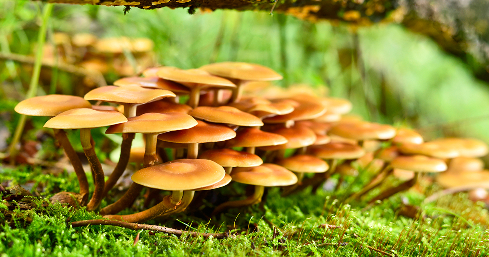

A mushroom is known as a toadstool.
● Reduces the risk of obesity and other diseases- Many chronic diseases like Diabetes, cardiac diseases are proved to be cured by the intake of mushrooms.
● Prevents Cancer- Being high in antioxidants and low in sodium, fat and cholesterol, it is the best friend for your cells thereby preventing Cancer.
● Powers up the Immune System- Mushrooms are richly packed with Selenium which one cannot find in fruits or vegetables. This helps in boosting immunity.
● Excellent source of proteins- Mushrooms have very high protein content which is the best alternative to meat.
● Gears up the energy- Mushrooms are a good powerhouse of energy values which is equivalent to that of an apple.
● Weight Management- Mushrooms are rich in dietary fibres that help in maintaining fullness in your tummy. Thus it helps in weight management.
saprotrophic
mycorrhizal
parasitic
endophytic
● Cremini mushrooms
● Portobello
● Porcini
● Shitake
● Oyster
● Chanterelle
● Enoki
● Morel
A few of the most common mushrooms include:
● Stalk-and-cap appearance. The most recognizable, mushrooms with stalk and cap contain many edible varieties, such as the button mushroom and portobello mushrooms. Unfortunately, poisonous mushrooms, such as the Amanita bisporigera or “destroying angel,” also have a cap and stalk, making it difficult to discern edible mushrooms from their dangerous counterparts .
● Mycelium.
● Spores All mushrooms produce spores, but the fate of the spores differentiates types of mushrooms from one another. Some mushroom spores are fertilized sexually, while other spores need to land nearby to produce a new mushroom
● Unique mushrooms Some mushrooms are simply unique in appearance and don't fit the mold of your typical button mushroom.
Morel mushrooms, for example, have been described as having flesh that looks like a tiny tree or a small brain.

Antioxidants For people suffering from an injury or those with inflammation disorders, mushrooms are an important addition to the diet. Two powerful antioxidants, selenium and ergothioneine, are found in mushrooms and impart anti-inflammatory benefits when consumed.
Beta Glucan Found in the cell wall of mushrooms and other fungi, beta glucan is believed to enhance immune response, improve cholesterol, and support heart health. Mushrooms are a good source of beta glucan. Other sources include baker's yeast and whole-grain oats or barley. Researchers continue to study beta glucan as its ability to prolong life in cancer patients is promising.
Phytochemicals A group of beneficial chemicals found in raw produce, phytochemicals have been shown to impart anti-aging and anti-cancer benefits. Some of the phytochemicals found in mushrooms include alkaloids, flavonoids, glycosides, and phenols. It is believed that these phytochemicals help the body ward off toxins, recover from illness, and alleviate pain.
Vitamin D Typically acquired via the skin's exposure to sunlight, vitamin D is rarely found in foods but is an absolute necessity for your bones. Foods containing vitamin D, such as fish or dairy products, may be restricted for those on a special diet. Mushrooms’ significant vitamin D content augments your intake of vitamin D from the sun (without the need to wear SPF).